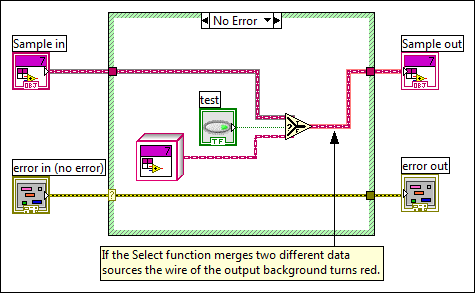
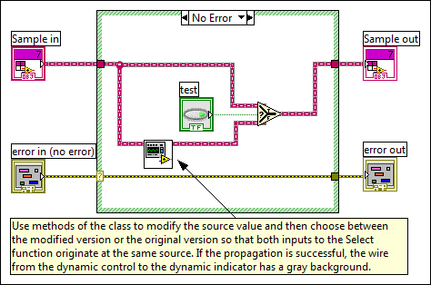

A Select function lies along the path between a dynamic control and the dynamic indicator. Both the t and f inputs of the Select function must be some modification of the original data in the dynamic control.
This error occurs when either the data coming into one of the inputs of the Select function originates at a different source or the data passes through a function that does not guarantee run-time type preservation.
To correct this error, verify the source of the data and ensure that any functions that the data passes through preserve the run-time type.
